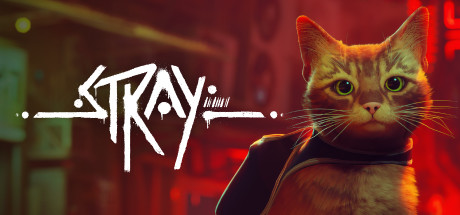

In Stray
Lost, alone and separated from family, a stray cat must untangle an ancient mystery to escape a long-forgotten city. Stray is a third-person cat adventure game set amidst the detailed neon-lit alleys of a decaying cybercity and the murky environments of its seedy underbelly. Roam surroundings high and low, defend against unforeseen threats and solve the mysteries of this unwelcoming place inhabited by nothing but unassuming droids and dangerous creatures. See the world through the eyes of a stray and interact with the environment in playful ways. Be stealthy, nimble, silly, and sometimes as annoying as possible with the strange inhabitants of this foreign world. Along the way, the cat befriends a small flying drone, known only as B12. With the help of this newfound companion, the duo try to find a way out. Stray is developed by BlueTwelve Studio, a small team from south of France mostly made of cats and a handful of humans.
| SYSTEM REQUIREMENTS | MINIMUM | RECOMENDS |
|---|---|---|
| Requires | a 64-bit processor and operating system | Requires a 64-bit processor and operating system |
| OS | Windows 10 | Windows 10 |
| Processor | Intel Core i5-2300 | AMD FX-6350 | Intel Core i5-8400 | AMD Ryzen 5 2600 |
| Memory | 8 GB RAM | 8 GB RAM |
| Graphics | NVIDIA GeForce GTX 650 Ti, 2 GB | AMD Radeon R7 360, 2 GB | NVIDIA GeForce GTX 780, 3 GB | AMD Radeon R9 290X, 4 GB |
| DirectX | Version 12 | Version 12 |
| Storage | 10 GB available space | 10 GB available space |